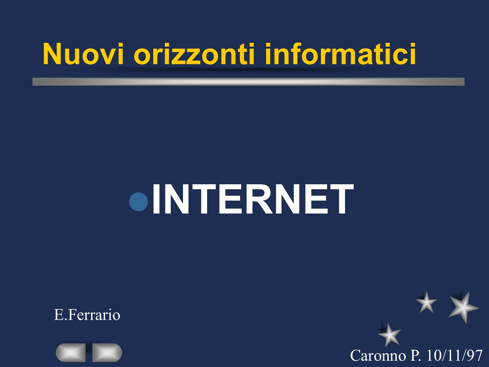
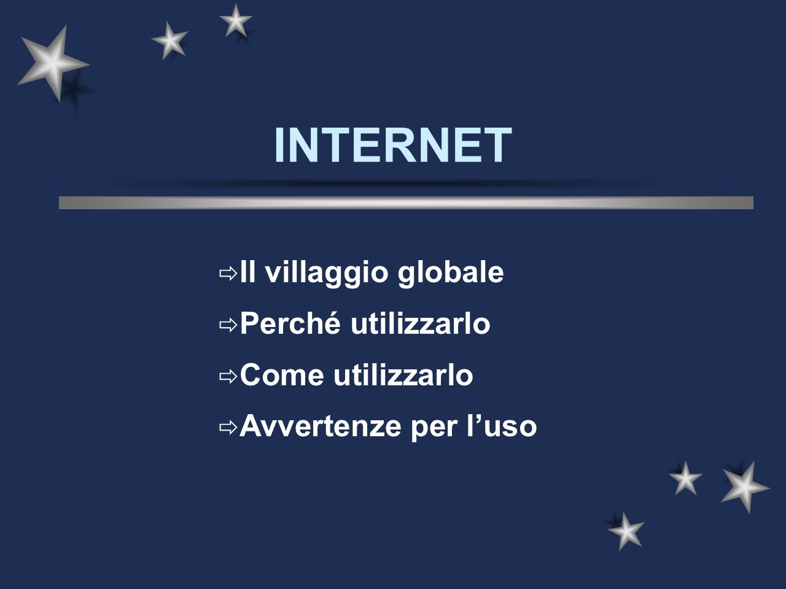
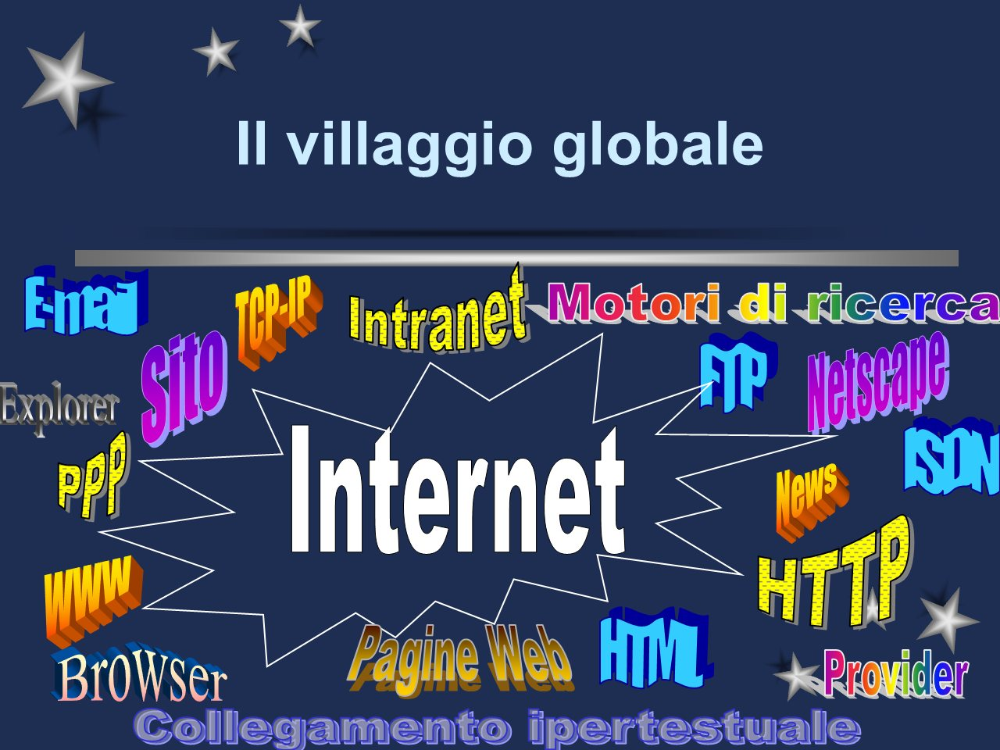
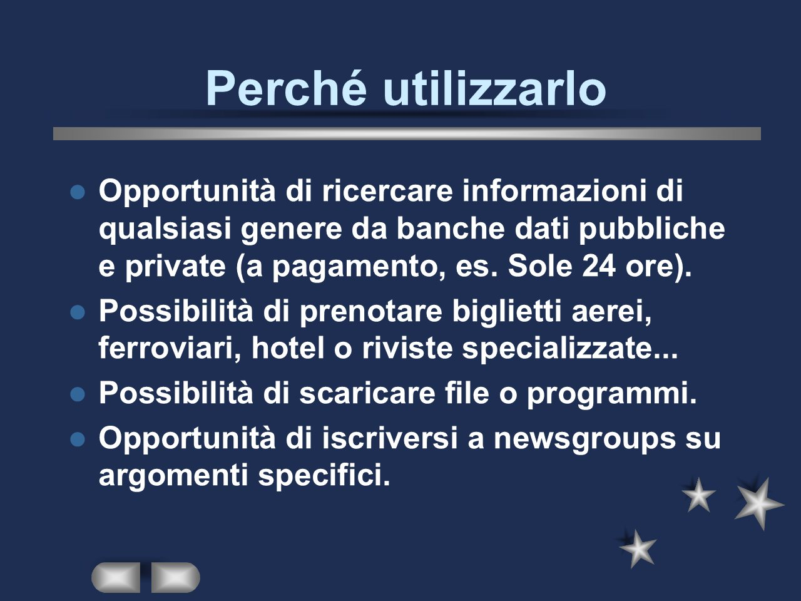
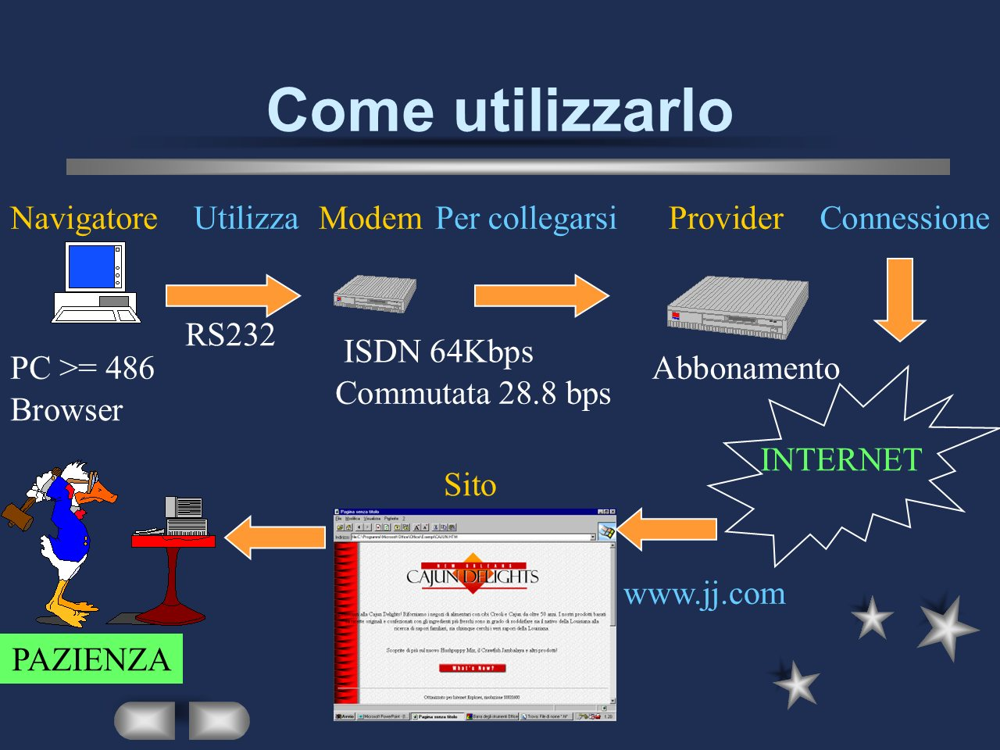
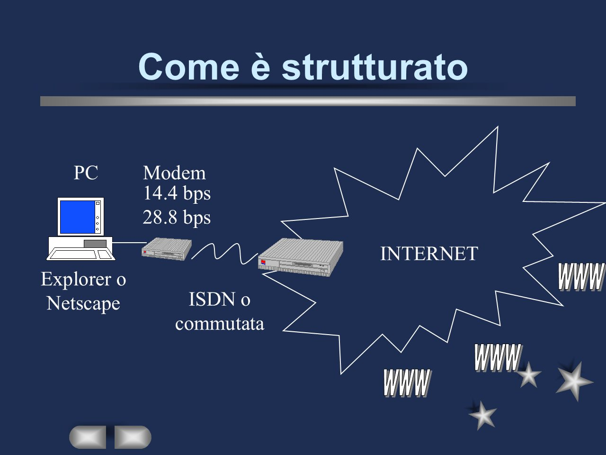
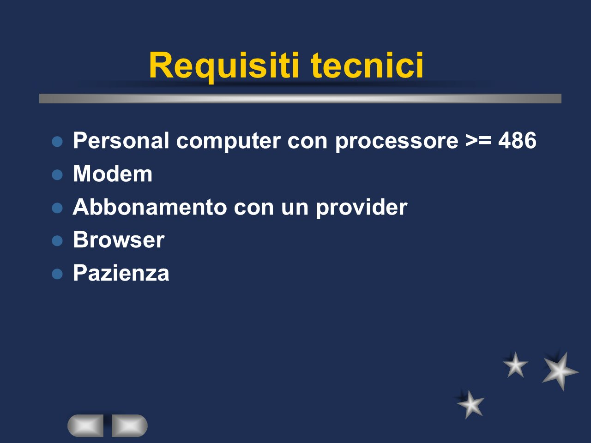
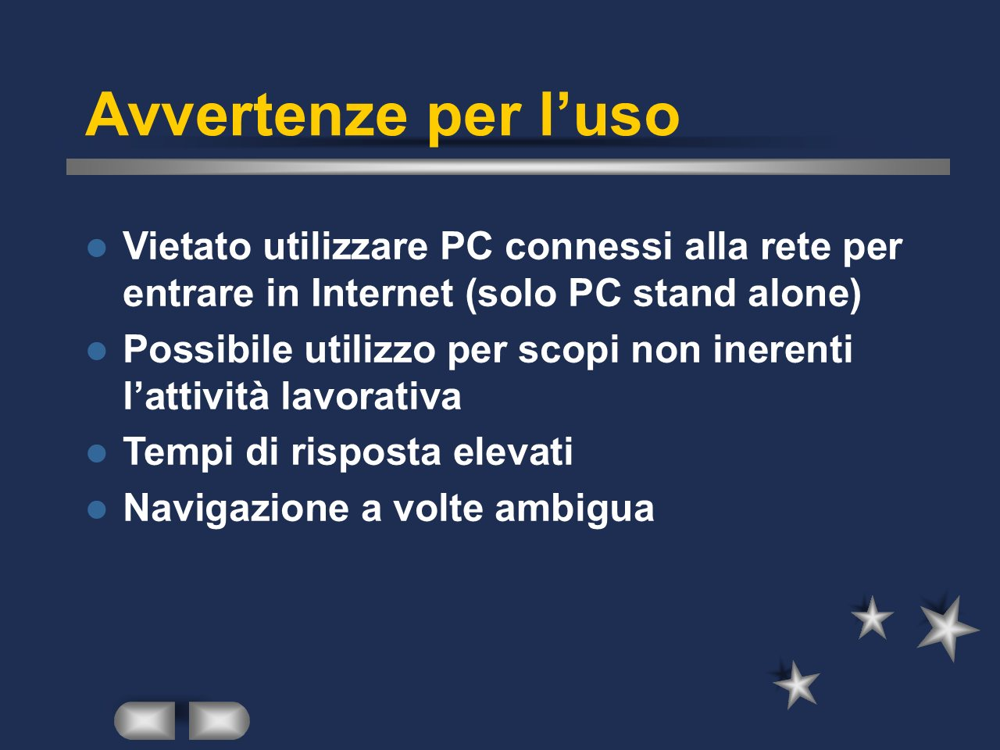

← Torna a Presentazioni e spunti
Il villaggio globale: perché utilizzare Internet, come utilizzarlo e le avvertenze per l’uso. Una presentazione del 1997, quando collegarsi alla rete voleva dire un modem, un abbonamento con un provider e molta pazienza.
Scarica la presentazione (PowerPoint, 119 KB)







